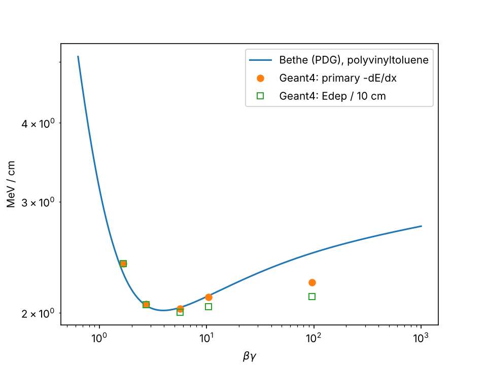

Idle> /analysis/h1/set 0 200 0 80 MeV
Predict first, then simulate, then compare. You scan a muon through 10 cm of plastic scintillator at five energies, 10,000 events each, with no viewer open, and put the result on the same plot as the formula every muon physicist uses.
先预测，再模拟，再比较。在不打开可视化的情况下，让缪子以五个能量各 10,000 个事例穿过 10 cm 塑料闪烁体，并把结果与每位缪子物理学家都要用的公式画在同一张图上。
/run/initializelearning goals学习目标
G4AnalysisManager.用 SteppingAction → EventAction → RunAction 累加逐事例可观测量，并用 G4AnalysisManager 写出。/control/echo backgroundbackground · for non-physicists背景知识 · 写给非物理专业
Background · Ionisation, like friction电离，就像摩擦
As a fast charged particle passes atoms, its electric field tugs on their electrons and knocks some loose. Each kick takes a little energy. Summed over billions of atoms, the loss is smooth and predictable, described by the Bethe formula of this week. Slow particles lose more, because they spend longer near each atom.
快速带电粒子经过原子时，它的电场拉扯原子中的电子，把一些电子打出来。每次撞击带走一点能量。对数十亿个原子求和，损失是平滑可预测的，由本周的 Bethe 公式描述。慢的粒子损失更多，因为它在每个原子附近停留得更久。
Background · The minimum-ionising muon最小电离的缪子
The loss per g/cm² has a broad minimum near a few hundred MeV and rises only slowly above it. Most cosmic muons sit near this minimum, losing roughly 1.7 to 2.5 MeV per g/cm² in rock. That is about 0.5 GeV per metre of standard rock and about 0.2 GeV per metre of water.
每 g/cm² 的能量损失在几百 MeV 附近有一个宽的最小值，之后只缓慢上升。大多数宇宙线缪子处在这个最小值附近，在岩石中每 g/cm² 损失约 1.7 到 2.5 MeV，相当于每米标准岩石约 0.5 GeV、每米水约 0.2 GeV。
Background · Mean and most probable are different平均值与最可几值不同
Occasionally a muon kicks one electron very hard. These rare large losses pull the average up, while the typical event loses less. Engineers who know skewed distributions such as floods or wind gusts will recognise the long tail. Week 11 shows how a histogram that cuts the tail gives a wrong mean.
偶尔缪子会把某个电子打得很重。这些罕见的大损失把平均值拉高，而典型事例损失得更少。熟悉洪水或阵风这类偏态分布的工程师会认出这条长尾。第 11 周会展示截掉尾巴的直方图如何给出错误的平均值。
For muography projects用于缪子成像工程
This energy loss is the physics of absorption muography. Under a given overburden only muons above a threshold energy survive (see the range table in the primer: about 10 GeV for 19 m of standard rock). The steep cosmic spectrum turns every change in overburden into a measurable change in rate.
这种能量损失就是吸收式缪子成像的物理基础。在给定的覆盖层下，只有高于阈值能量的缪子能存活（见入门页的射程表：19 米标准岩石约需 10 GeV）。宇宙线能谱很陡，所以覆盖层的每一点变化都会变成可测量的计数率变化。
New to muons, units such as g/cm² or m.w.e., or muography? Start with the background primer.还不熟悉缪子、g/cm² 或米水当量这类单位，或缪子成像？先读入门背景。
/control/manual4.1 · the Bethe formula4.1 · Bethe 公式
From Fermilab's Muon g−2 to PSI's muon EDM, from muography to the SHINE muon source, every muon experiment rests on predicting how a muon loses energy in matter. The standard reference is the Particle Data Group review of the passage of particles through matter.
从费米实验室的缪子 g−2 到 PSI 的缪子 EDM，从缪子成像到 SHINE 缪子源，每个缪子实验都建立在预言缪子如何在物质中损失能量的基础上。标准参考是粒子数据组（PDG）关于粒子穿过物质的综述。
Definition 4.1 · The Bethe–Bloch stopping-power model (leading form)Bethe–Bloch 阻止本领模型（主项形式）
For a heavy charged particle of charge number z and speed β = v/c in a medium with atomic number Z and mass A, the mean energy loss per unit path length is approximately
电荷数为 z、速度 β = v/c 的重带电粒子，在原子序数 Z、原子量 A 的介质中，单位路径的平均能量损失近似为
K = 4πNAre²mec² = 0.307075 MeV cm²/mol; I is the mean excitation energy (64.7 eV for polyvinyltoluene); Tmax is the largest energy one collision can give a free electron; δ is the density-effect correction. Without δ, Eq. (4.1) is the leading form. Full calculations add shell corrections at low energy. The qualitative shape: a 1/β² fall at low βγ, a minimum near βγ ≈ 3–4 (the minimum ionizing particle, MIP), then a slow relativistic rise that δ tames.
K = 4πNAre²mec² = 0.307075 MeV cm²/mol；I 为平均激发能（聚乙烯基甲苯为 64.7 eV）；Tmax 为一次碰撞能交给自由电子的最大能量；δ 为密度效应修正。去掉 δ，式 (4.1) 就是主项形式；完整计算在低能端还要加壳层修正。定性形状：低 βγ 处按 1/β² 下降，在 βγ ≈ 3–4 处达到最小（最小电离粒子，MIP），之后缓慢地相对论上升，并被 δ 压平。
Think about it想一想
A 1 GeV muon has βγ ≈ 10.4, a 100 MeV muon βγ ≈ 1.67 (γ = 1 + T/mμc², mμc² = 105.66 MeV). Which sits closer to the minimum? Which loses more energy per cm? Write your guess, then run the scan.
1 GeV 缪子的 βγ ≈ 10.4，100 MeV 缪子的 βγ ≈ 1.67（γ = 1 + T/mμc²，mμc² = 105.66 MeV）。哪个更接近最小值？哪个每厘米损失的能量更多？先写下猜测，再运行扫描。
Intuition直觉
The 1/β² factor: a slow particle spends longer near each electron it passes and gives it more energy, like a car crossing a speed bump slowly and shaking longer. The relativistic rise: the transverse field of a fast particle is Lorentz-compressed and reaches electrons further away; the polarised medium screens that reach, which is δ. The minimum, about 1–2 MeV cm²/g in most materials, is why cosmic muons are a near-universal calibration source.
1/β² 因子：慢粒子在经过的每个电子附近停留更久，交给它更多能量，就像车慢慢开过减速带，颠得更久。相对论上升：快粒子的横向电场被洛伦兹压缩，能“够到”更远的电子；被极化的介质会屏蔽这种影响，这就是 δ。最小值在大多数材料中约为 1–2 MeV cm²/g，这正是宇宙线缪子几乎可以作为通用刻度源的原因。
/control/execute run_bethe_bloch.mac4.2 · batch mode for statistics4.2 · 用批处理获取统计
Example 4.1 · Lab 4: an energy-loss scan across five energies实验 4：五个能量点的能损扫描
Fix the medium as 10 cm of plastic scintillator. Fire muons at 100 MeV, 200 MeV, 500 MeV, 1 GeV and 10 GeV, at least 10⁴ events per point. Accumulate the total deposited energy per event, giving Edep/ℓ for the slab, and in parallel the primary muon's own kinetic-energy loss per path length, an approximate stopping-power observable. Plot both against βγ on log–log axes and compare the primary loss with Bethe. Edep/ℓ is a detector-response quantity and may differ when secondaries escape; do not force it to equal the stopping power.
介质固定为 10 cm 塑料闪烁体。依次以 100 MeV、200 MeV、500 MeV、1 GeV 和 10 GeV 发射缪子，每点至少 10⁴ 个事例。逐事例累加总沉积能量，得到板的 Edep/ℓ；同时累加主缪子自身单位路径的动能损失，作为近似的阻止本领可观测量。在双对数坐标中把两者对 βγ 作图，并把主粒子损失与 Bethe 公式比较。Edep/ℓ 是探测器响应量，次级粒子逃逸时可能与阻止本领不同，不要强求两者相等。
Three classes turn "steps happened" into "one dE/dx per event, saved to a histogram". SteppingAction adds each step's deposit to a running total kept by EventAction; EventAction hands the total to the histogram at the end of the event; RunAction owns the histograms through G4AnalysisManager for the lifetime of the run.
三个类把“发生了若干步”变成“每个事例一个 dE/dx，存入直方图”：SteppingAction 把每一步的沉积加到 EventAction 维护的累计值上；EventAction 在事例结束时把累计值交给直方图；RunAction 通过 G4AnalysisManager 在整个运行期间持有这些直方图。
if (!preVolume || preVolume->GetName() != "Scintillator") return; // score one volume fEventAction->AddEdep(step->GetTotalEnergyDeposit()); // detector response if (track->GetParentID() == 0) // the primary only dEprimary = pre->GetKineticEnergy() - post->GetKineticEnergy(); // closer to stopping power
Research thread · laboratory habit研究线索 · 实验室习惯
Treat visualization as a camera, not the experiment. Use the viewer on a handful of events, then a headless macro for statistics and reproducibility. It is the same workflow you will use later on an HPC cluster over SSH. Headless is not "less physical": the display changes how the event is shown, not how Geant4 transports it.
把可视化当成相机，而不是实验本身。用可视化看几个事例，然后用无界面宏获取统计和可重复性。这和你以后通过 SSH 在 HPC 集群上的工作流程完全一样。无界面并不意味着“不那么物理”：显示只改变事例的呈现方式，不改变 Geant4 如何输运它。
/run/beamOn 3000interactive toy model交互玩具模型
The upper plot is Eq. (4.1) for the chosen material; for plastic it also shows our five Geant4 points. The histogram is a toy straggling simulation of the energy deposited in a slab: thin slabs give a skewed Landau-like peak, and δ-rays that leave through the back face pull the deposit below the loss.
上图是所选材料的式 (4.1)；选塑料时还会显示我们的五个 Geant4 点。直方图是板中沉积能量的玩具涨落模拟：薄板给出偏斜的类朗道峰，从后表面逃出的 δ 电子使沉积低于损失。
Bethe curveBethe 曲线
energy deposit in the slab, 3,000 toy events板中沉积能量，3,000 个玩具事例
TOY MODEL · approximations近似
Curve: PDG RPP 2024, Eq. (34.5) with the Sternheimer density correction (PDG material tables); spin and shell terms neglected. It reproduces the PDG minimum dE/dx of all six materials to 0.1%. Histogram: loss = restricted continuous loss below Tc + Poisson δ-rays above Tc from the 1/T² spectrum, with Tc set so about 300 δ-rays are drawn per event. A δ-ray deposits the part of its energy that fits before the back face (Katz–Penfold range, straight forward path). Ignored: the muon slowing down inside the slab, sideways leakage, fluctuations below Tc, radiative losses.
曲线：PDG RPP 2024 式 (34.5) 加 Sternheimer 密度效应修正（PDG 材料表），忽略自旋项和壳层项；它对全部六种材料的 PDG 最小 dE/dx 复现到 0.1%。直方图：损失 = Tc 以下的受限连续损失 + Tc 以上按 1/T² 谱泊松抽样的 δ 电子，Tc 取值使每个事例约抽 300 个 δ 电子。δ 电子只沉积它在到达后表面之前能交出的那部分能量（Katz–Penfold 射程，直线前向）。忽略：缪子在板内减速、侧向泄漏、Tc 以下的涨落、辐射损失。
/control/shell ./week04 run_bethe_bloch.machands-on · Lab 4动手实验 · 实验 4
Outputs are real Geant4 11.4.p01 runs of these files with the course test physics list. Its muon ionisation, bremsstrahlung and pair production are the same models as FTFP_BERT, so the primary −dE/dx should agree with yours within errors; Edep can differ by about 1% because of the simpler electron models.
下面的输出来自这些文件在 Geant4 11.4.p01 上的真实运行，使用课程测试物理列表。它的缪子电离、轫致辐射和电子对产生与 FTFP_BERT 是同一组模型，所以主粒子 −dE/dx 应在误差内与你的结果一致；由于电子模型较简化，Edep 可能相差约 1%。
Start from week03/: keep ActionInitialization.hh and the headers, replace or add the files below. steps_summary.py and the Week 3 SteppingAction printout are no longer needed.
从 week03/ 开始：保留 ActionInitialization.hh 和各头文件，替换或新增下列文件。第 3 周的 steps_summary.py 和 SteppingAction 打印不再需要。
cmake_minimum_required(VERSION 3.16)
project(Week04 LANGUAGES CXX)
set(CMAKE_CXX_STANDARD 17)
set(CMAKE_CXX_STANDARD_REQUIRED ON)
find_package(Geant4 REQUIRED ui_all vis_all)
include(${Geant4_USE_FILE})
file(GLOB sources CONFIGURE_DEPENDS ${PROJECT_SOURCE_DIR}/src/*.cc)
file(GLOB headers CONFIGURE_DEPENDS ${PROJECT_SOURCE_DIR}/include/*.hh)
add_executable(week04 week04.cc ${sources} ${headers})
target_include_directories(week04 PRIVATE include)
target_link_libraries(week04 PRIVATE ${Geant4_LIBRARIES})
foreach(_f run_bethe_bloch.mac vis.mac plot_bethe.py)
configure_file(${PROJECT_SOURCE_DIR}/${_f} ${PROJECT_BINARY_DIR}/${_f} COPYONLY)
endforeach()#include "ActionInitialization.hh"
#include "DetectorConstruction.hh"
#include "FTFP_BERT.hh"
#include "G4RunManagerFactory.hh"
#include "G4UIExecutive.hh"
#include "G4UImanager.hh"
#include "G4VisExecutive.hh"
int main(int argc, char** argv)
{
// Serial keeps the histogram code simple this week; Week 8 switches to
// G4RunManagerType::Default and merges threads.
auto* runManager =
G4RunManagerFactory::CreateRunManager(G4RunManagerType::Serial);
runManager->SetUserInitialization(new DetectorConstruction());
runManager->SetUserInitialization(new FTFP_BERT());
runManager->SetUserInitialization(new ActionInitialization());
runManager->Initialize();
auto* uiManager = G4UImanager::GetUIpointer();
if (argc > 1) {
// headless: ./week04 run_bethe_bloch.mac
uiManager->ApplyCommand("/control/execute " + G4String(argv[1]));
} else {
// diagnosis only: ./week04 opens the viewer
auto* ui = new G4UIExecutive(argc, argv);
auto* visManager = new G4VisExecutive();
visManager->Initialize();
uiManager->ApplyCommand("/control/execute vis.mac");
ui->SessionStart();
delete visManager;
delete ui;
}
delete runManager;
return 0;
}#include "DetectorConstruction.hh"
#include "G4Box.hh"
#include "G4LogicalVolume.hh"
#include "G4NistManager.hh"
#include "G4PVPlacement.hh"
#include "G4SystemOfUnits.hh"
// Lab 4: a 50 x 50 x 10 cm3 plastic scintillator slab in air,
// the plastic bench counter of Week 1.
G4VPhysicalVolume* DetectorConstruction::Construct()
{
G4NistManager* nist = G4NistManager::Instance();
G4Material* air = nist->FindOrBuildMaterial("G4_AIR");
G4Material* scint = nist->FindOrBuildMaterial("G4_PLASTIC_SC_VINYLTOLUENE");
auto* solidWorld = new G4Box("World", 1. * m, 1. * m, 1. * m); // half-lengths: a 2 m cube
auto* logicWorld = new G4LogicalVolume(solidWorld, air, "World");
auto* physWorld = new G4PVPlacement(nullptr, G4ThreeVector(), logicWorld, "World",
nullptr, false, 0, true);
// 10 cm thick along the beam (z), 50 cm wide so few delta-rays leave sideways
auto* solidScint = new G4Box("Scintillator", 25. * cm, 25. * cm, 5. * cm);
auto* logicScint = new G4LogicalVolume(solidScint, scint, "Scintillator");
new G4PVPlacement(nullptr, G4ThreeVector(), logicScint, "Scintillator",
logicWorld, false, 0, true);
return physWorld;
}#include "PrimaryGeneratorAction.hh"
#include "G4Event.hh"
#include "G4ParticleGun.hh"
#include "G4ParticleTable.hh"
#include "G4SystemOfUnits.hh"
PrimaryGeneratorAction::PrimaryGeneratorAction()
{
fParticleGun = new G4ParticleGun(1);
fParticleGun->SetParticleDefinition(G4ParticleTable::GetParticleTable()->FindParticle("mu-"));
fParticleGun->SetParticleMomentumDirection(G4ThreeVector(0., 0., 1.));
fParticleGun->SetParticleEnergy(1. * GeV); // changed per run by /gun/energy
fParticleGun->SetParticlePosition(G4ThreeVector(0., 0., -0.9 * m)); // inside the 2 m world
}
PrimaryGeneratorAction::~PrimaryGeneratorAction()
{
delete fParticleGun;
}
void PrimaryGeneratorAction::GeneratePrimaries(G4Event* event)
{
fParticleGun->GeneratePrimaryVertex(event);
}#ifndef EventAction_h
#define EventAction_h 1
#include "G4UserEventAction.hh"
#include "globals.hh"
class EventAction : public G4UserEventAction
{
public:
void BeginOfEventAction(const G4Event*) override
{
fEdep = 0.;
fPrimaryLoss = 0.;
fPrimaryPath = 0.;
}
void EndOfEventAction(const G4Event*) override;
void AddEdep(G4double edep) { fEdep += edep; }
void AddPrimaryLoss(G4double loss) { fPrimaryLoss += loss; }
void AddPrimaryPath(G4double length) { fPrimaryPath += length; }
private:
G4double fEdep = 0.;
G4double fPrimaryLoss = 0.;
G4double fPrimaryPath = 0.;
};
#endif#include "EventAction.hh"
#include "G4AnalysisManager.hh"
#include "G4SystemOfUnits.hh"
void EventAction::EndOfEventAction(const G4Event*)
{
auto* analysisManager = G4AnalysisManager::Instance();
// Fill in explicit units so the ROOT axes read MeV and MeV/cm.
analysisManager->FillH1(0, fEdep / MeV);
if (fPrimaryPath > 0.)
analysisManager->FillH1(1, (fPrimaryLoss / fPrimaryPath) / (MeV / cm));
}#ifndef SteppingAction_h
#define SteppingAction_h 1
#include "G4UserSteppingAction.hh"
class EventAction;
class SteppingAction : public G4UserSteppingAction
{
public:
explicit SteppingAction(EventAction* eventAction) : fEventAction(eventAction) {}
void UserSteppingAction(const G4Step* step) override;
private:
EventAction* fEventAction = nullptr;
};
#endif#include "SteppingAction.hh"
#include "EventAction.hh"
#include "G4Step.hh"
void SteppingAction::UserSteppingAction(const G4Step* step)
{
const auto* preVolume =
step->GetPreStepPoint()->GetTouchableHandle()->GetVolume();
if (!preVolume || preVolume->GetName() != "Scintillator") return;
const G4double edep = step->GetTotalEnergyDeposit();
if (edep > 0.) fEventAction->AddEdep(edep);
// For the primary muon, track the energy lost by the primary itself.
// This is closer to a stopping-power observable than Edep, because a
// delta ray may carry energy out of the scoring volume.
const auto* track = step->GetTrack();
if (track->GetParentID() == 0) {
const G4double dEprimary =
step->GetPreStepPoint()->GetKineticEnergy() -
step->GetPostStepPoint()->GetKineticEnergy();
if (dEprimary > 0.) fEventAction->AddPrimaryLoss(dEprimary);
fEventAction->AddPrimaryPath(step->GetStepLength());
}
}#ifndef RunAction_h
#define RunAction_h 1
#include "G4UserRunAction.hh"
class G4Run;
class RunAction : public G4UserRunAction
{
public:
RunAction();
void BeginOfRunAction(const G4Run*) override;
void EndOfRunAction(const G4Run* run) override;
};
#endif#include "RunAction.hh"
#include "G4AnalysisManager.hh"
#include "G4Run.hh"
#include "G4ios.hh"
RunAction::RunAction()
{
auto* analysisManager = G4AnalysisManager::Instance();
analysisManager->SetDefaultFileType("root");
analysisManager->SetFileName("edep_scan"); // override per run: /analysis/setFileName
// Ranges chosen so the whole Landau peak AND its tail fit (10 cm of plastic
// gives ~20 MeV at the minimum and ~28 MeV at 100 MeV kinetic energy).
analysisManager->CreateH1("Edep", "Energy deposit per event [MeV]", 200, 0., 80.);
analysisManager->CreateH1("PrimarydEdx",
"Primary muon energy loss per path length [MeV/cm]",
200, 0., 10.);
}
void RunAction::BeginOfRunAction(const G4Run*)
{
G4AnalysisManager::Instance()->OpenFile();
}
void RunAction::EndOfRunAction(const G4Run* run)
{
auto* analysisManager = G4AnalysisManager::Instance();
auto* hEdep = analysisManager->GetH1(0);
auto* hdEdx = analysisManager->GetH1(1);
G4cout << "Run complete: " << run->GetNumberOfEvent() << " events." << G4endl
<< " Edep in Scintillator : mean " << hEdep->mean() << " MeV, rms "
<< hEdep->rms() << " MeV" << G4endl
<< " primary -dE/dx : mean " << hdEdx->mean() << " MeV/cm, rms "
<< hdEdx->rms() << " MeV/cm" << G4endl;
analysisManager->Write();
analysisManager->CloseFile();
}#include "ActionInitialization.hh"
#include "EventAction.hh"
#include "PrimaryGeneratorAction.hh"
#include "RunAction.hh"
#include "SteppingAction.hh"
void ActionInitialization::Build() const
{
SetUserAction(new PrimaryGeneratorAction());
SetUserAction(new RunAction());
auto* eventAction = new EventAction();
SetUserAction(eventAction);
SetUserAction(new SteppingAction(eventAction));
}# Lab 4: headless energy-loss scan, five kinetic energies, 10^4 events each /control/verbose 0 /run/verbose 0 /event/verbose 0 /tracking/verbose 0 # Keep visualization off: this job is for statistics. /gun/energy 100 MeV /analysis/setFileName edep_0100MeV /run/beamOn 10000 /gun/energy 200 MeV /analysis/setFileName edep_0200MeV /run/beamOn 10000 /gun/energy 500 MeV /analysis/setFileName edep_0500MeV /run/beamOn 10000 /gun/energy 1 GeV /analysis/setFileName edep_1000MeV /run/beamOn 10000 /gun/energy 10 GeV /analysis/setFileName edep_10000MeV /run/beamOn 10000
# Diagnosis, not measurement: look at a few events, then run headless /vis/open /vis/drawVolume /vis/viewer/set/viewpointThetaPhi 90 90 deg /vis/scene/add/trajectories smooth /vis/modeling/trajectories/create/drawByCharge /vis/scene/endOfEventAction accumulate /run/beamOn 3
"""Lab 4 analysis: compare the Geant4 energy-loss scan with the Bethe formula.
Reads edep_<E>MeV.root written by ./week04 run_bethe_bloch.mac, takes the mean of
the two histograms in each file, and plots them against beta*gamma together with
the PDG Bethe formula (with density effect) for polyvinyltoluene.
pip install uproot matplotlib numpy
python3 plot_bethe.py
"""
import math
import numpy as np
import uproot
M_MU = 105.6583755 # MeV, muon mass (PDG)
M_E = 0.51099895 # MeV
K = 0.307075 # MeV cm2/mol
# Polyvinyltoluene (G4_PLASTIC_SC_VINYLTOLUENE): PDG atomic & nuclear properties
ZA, RHO, I_EV = 0.54141, 1.032, 64.7
CBAR, X0, X1, A_D, K_D = 3.1997, 0.1464, 2.4855, 0.1610, 3.2393 # Sternheimer, delta0 = 0
THICK_CM = 10.0
ENERGIES = [100, 200, 500, 1000, 10000] # kinetic energy, MeV
def beta_gamma(T):
g = 1.0 + T / M_MU
return math.sqrt(g * g - 1.0)
def delta(bg):
x = math.log10(bg)
if x >= X1:
return 2 * math.log(10) * x - CBAR
if x >= X0:
return 2 * math.log(10) * x - CBAR + A_D * (X1 - x) ** K_D
return 0.0
def bethe(bg):
"""Mean -dE/dx in MeV/cm for a muon (PDG Eq. 34.5, no spin or shell terms)."""
g = math.sqrt(1 + bg * bg)
b2 = bg * bg / (g * g)
r = M_E / M_MU
wmax = 2 * M_E * bg * bg / (1 + 2 * g * r + r * r)
arg = 2 * M_E * bg * bg * wmax / (I_EV * 1e-6) ** 2
return K * ZA / b2 * (0.5 * math.log(arg) - b2 - delta(bg) / 2) * RHO
def hmean(h):
"""Mean of a ROOT TH1 from its stored statistics (falls back to bin centres)."""
try:
sw, swx = h.member("fTsumw"), h.member("fTsumwx")
if sw > 0:
return swx / sw
except Exception:
pass
vals, edges = h.to_numpy()
c = 0.5 * (edges[:-1] + edges[1:])
return float((vals * c).sum() / vals.sum())
rows = []
for T in ENERGIES:
with uproot.open(f"edep_{T:04d}MeV.root") as f:
edep = hmean(f["Edep"])
dedx = hmean(f["PrimarydEdx"])
bg = beta_gamma(T)
rows.append((T, bg, edep / THICK_CM, dedx, bethe(bg)))
print(f"{'T [MeV]':>8} {'bg':>7} {'Edep/l':>8} {'primary':>8} {'Bethe':>8} {'prim/Bethe':>10}")
for T, bg, el, d, b in rows:
print(f"{T:8d} {bg:7.2f} {el:8.3f} {d:8.3f} {b:8.3f} {d / b:10.3f}")
try:
import matplotlib.pyplot as plt
bgs = np.logspace(-0.2, 3, 200)
plt.loglog(bgs, [bethe(b) for b in bgs], "-", label="Bethe (PDG), polyvinyltoluene")
plt.loglog([r[1] for r in rows], [r[3] for r in rows], "o", label="Geant4: primary -dE/dx")
plt.loglog([r[1] for r in rows], [r[2] for r in rows], "s", mfc="none", label="Geant4: Edep / 10 cm")
plt.xlabel(r"$\beta\gamma$")
plt.ylabel("MeV / cm")
plt.legend()
plt.savefig("bethe_scan.png", dpi=150)
print("wrote bethe_scan.png")
except ImportError:
passBuild, then run ./week04 with no argument. Check that the muon crosses the slab and that δ-rays (red) start inside it. That is all the viewer is for. Close it.
编译后不带参数运行 ./week04。确认缪子穿过了板、δ 电子（红色）从板内产生。可视化的用处仅此而已，然后关闭它。
./week04 run_bethe_bloch.mac | grep -A2 "Run complete" ls edep_*.root
Run complete: 10000 events. # 100 MeV Edep in Scintillator : mean 23.9456 MeV, rms 1.49069 MeV primary -dE/dx : mean 2.3938 MeV/cm, rms 0.142915 MeV/cm Run complete: 10000 events. # 200 MeV Edep in Scintillator : mean 20.605 MeV, rms 1.91377 MeV primary -dE/dx : mean 2.06499 MeV/cm, rms 0.194799 MeV/cm Run complete: 10000 events. # 500 MeV Edep in Scintillator : mean 20.0552 MeV, rms 3.03256 MeV primary -dE/dx : mean 2.0317 MeV/cm, rms 0.358942 MeV/cm Run complete: 10000 events. # 1 GeV Edep in Scintillator : mean 20.4637 MeV, rms 3.87161 MeV primary -dE/dx : mean 2.11935 MeV/cm, rms 0.633381 MeV/cm Run complete: 10000 events. # 10 GeV Edep in Scintillator : mean 21.2108 MeV, rms 4.41375 MeV primary -dE/dx : mean 2.23402 MeV/cm, rms 0.841011 MeV/cm
50,000 events took 6 s on one core. Statistical error on each mean: rms/√10⁴, so ±0.015–0.044 MeV for Edep and ±0.0014–0.0084 MeV/cm for −dE/dx.
50,000 个事例在单核上用了 6 s。每个均值的统计误差为 rms/√10⁴：Edep 为 ±0.015–0.044 MeV，−dE/dx 为 ±0.0014–0.0084 MeV/cm。
pip install uproot matplotlib numpy python3 plot_bethe.py
T [MeV] bg Edep/l primary Bethe prim/Bethe
100 1.67 2.395 2.394 2.308 1.037
200 2.71 2.061 2.065 2.055 1.005
500 5.64 2.006 2.032 2.039 0.996
1000 10.42 2.046 2.119 2.129 0.996
10000 95.64 2.121 2.234 2.487 0.898
wrote bethe_scan.pngThe three middle points agree with the formula to 0.5%. The prediction holds: the 100 MeV muon loses 13% more per cm than the 1 GeV one. The two ends disagree, and each has a physical reason, which is the point of the exercise:
中间三个点与公式的差别在 0.5% 以内。预测得到验证：100 MeV 缪子每厘米的损失比 1 GeV 缪子多 13%。两端不一致，各有物理原因，这正是本练习的要点：

Pick one and predict the result before running. (a) Raise the dE/dx histogram ceiling to 100 MeV/cm and rerun 10 GeV: how much of the −10% comes back? (b) Make the slab 50 × 50 × 1 cm³ (half-length 0.5*cm) and compare the Edep histogram's peak with its mean. (c) Swap the slab to G4_Pb at 1 GeV and compare with the Week 3 table (141.6 MeV over 10 cm).
任选一项，运行前先预测结果。(a) 把 dE/dx 直方图上限提高到 100 MeV/cm，重跑 10 GeV：−10% 的偏差能找回多少？(b) 把板改成 50 × 50 × 1 cm³（半长 0.5*cm），比较 Edep 直方图的峰位与均值。(c) 1 GeV 下把板换成 G4_Pb，与第 3 周的表（10 cm 中 141.6 MeV）比较。
/control/verbose 2self-check自测
G4Exceptioncommon errors常见错误
/control/saveHistoryreview notes复习要点
Remark · debt repaid, debt taken on小结 · 还清的债与新欠的债
Repaid: Bethe–Bloch is a curve you scanned yourself, and the stepping-action and scoring machinery arrived because a measurement needed them. Taken on: energy loss is still passive; the energy is simply gone. Next week asks how the detector knows it happened.
还清的债：Bethe–Bloch 是你亲手扫描出的曲线；步进动作和计分机制是因为测量需要才引入的。新欠的债：能量损失仍是被动的，能量只是消失了。下周要问：探测器如何“知道”这件事发生了？
/vis/ogl/export week04.gifshare this week分享本周成果